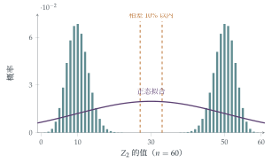

STEP II 2023，第 11 题
继续之前，请先阅读题目（原题为英文）。题目载于 OCR 提供下载的 2023 年 STEP 试卷（zip 文件）内的 STEP II 试卷： www.ocr.org.uk/Images/707102-2023-past-papers.zip
引子
怎样才能知道有多少比例的学生曾在考试中作弊，或者有多少比例的雇员曾偷取公司财物？直接问的话，很多人都会说谎。1965 年，统计学家 Stanley Warner 想出了一个巧妙的解决办法：随机化回答（randomised response）。每个人私下掷一枚硬币或一颗骰子，由结果决定他是如实回答那条敏感问题，还是回答与之相反的问题。访问员永远不知道是哪一种情况，所以任何一个人的答案都不足以成为对他不利的证据；然而，由于随机化的概率（probability）是已知的，整体的比例仍然可以估计出来。
本题探讨的正是这背后的数学。让每个人独立地（independently）随机化（第 (ii) 部分），所得的总数性质良好，足以确定该比例。用同一次掷硬币为所有人随机化（第 (iii) 部分），所得的总数虽然平均值（mean）相同，分布（distribution）却截然不同，呈双峰形状，几乎不能告诉我们任何事。随机性放在哪里，至关重要。
动笔之前
\(Y\) 以概率 \(p\) 等于 \(X_1\)，以概率 \(q\) 等于 \(X_2\)。\(\mathrm{E}(Y)\) 是甚么？\(\mathrm{E}(Y^2)\) 又是甚么？
以选中哪一个变量为条件，可得 \(\mathrm{E}(Y) = p\mu_1 + q\mu_2\)，以及 \(\mathrm{E}(Y^2) = p\,\mathrm{E}(X_1^2) + q\,\mathrm{E}(X_2^2) = p(\sigma_1^2 + \mu_1^2) + q(\sigma_2^2 + \mu_2^2)\)。
逐步解题
阶段 1 混合分布的方差
\[\mathrm{Var}(Y) = p(\sigma_1^2 + \mu_1^2) + q(\sigma_2^2 + \mu_2^2) - (p\mu_1 + q\mu_2)^2.\] 含 \(\mu\) 的各项为 \(p\mu_1^2 + q\mu_2^2 - p^2\mu_1^2 - 2pq\mu_1\mu_2 - q^2\mu_2^2 = pq\mu_1^2 + pq\mu_2^2 - 2pq\mu_1\mu_2\)，当中用到 \(p - p^2 = pq\) 和 \(q - q^2 = pq\)。因此 \[\mathrm{Var}(Y) = p\sigma_1^2 + q\sigma_2^2 + pq(\mu_1 - \mu_2)^2. \qed\] 混合分布（mixture）的方差（variance），等于各成分内部方差的平均，再加上各成分平均值之间的方差。
阶段 2 独立随机化
\(\mathrm{P}(B = 1)\) 是多少？\(B\) 的 \(n\) 个值是否独立？
\(\mathrm{P}(B = 1) = \frac12\cdot\frac16 + \frac12\cdot\frac56 = \frac12\)。这 \(n\) 个值互相独立，每个的成功概率都是 \(\frac12\)，所以 \(Z_1 \sim \mathrm{B}(n, \frac12)\)，其平均值为 \(\frac n2\)，标准差（standard deviation）为 \(\frac{\sqrt n}{2}\)。
与平均值相差不超过 \(10\%\)，即是 \(|Z_1 - \frac n2| < \frac{n}{20}\)。以标准单位表示，这就是 \(|Z| < \frac{n/20}{\sqrt n/2} = \frac{\sqrt n}{10}\)，而此值趋向无穷大，所以该概率趋向 \(1\)。■
阶段 3 所有人共用一枚硬币
现在只掷一次硬币，便决定全部 \(n\) 颗骰子的情况。已知掷得正面，\(Z_2\) 的分布是甚么？已知掷得反面呢？试用第 (i) 部分的结果。
已知掷得正面，\(Z_2 \sim \mathrm{B}(n, \frac16)\)：平均值为 \(\frac n6\)，方差为 \(\frac{5n}{36}\)。已知掷得反面，\(Z_2 \sim \mathrm{B}(n, \frac56)\)：平均值为 \(\frac{5n}{6}\)，方差为 \(\frac{5n}{36}\)。在第 (i) 部分取 \(p = q = \frac12\)，得 \[\mathrm{E}(Z_2) = \frac n2, \qquad \mathrm{Var}(Z_2) = \frac{5n}{36} + \frac14\Bigl(\frac{4n}{6}\Bigr)^2 = \frac{5n}{36} + \frac{n^2}{9}.\]
大部分的概率集中在哪里？在平均值 \(\frac n2\) 附近的概率多吗？
\(Z_2\) 有两个峰，分别在 \(\frac n6\) 和 \(\frac{5n}{6}\) 附近，每个峰的阔度约为 \(\sqrt n\)（图 13.5.1），而两峰之间几乎甚么都没有。具有相同平均值和方差的正态分布（normal distribution）则只有一个峰，中心位于 \(\frac n2\)，正正是 \(Z_2\) 几乎从不出现的位置。要 \(Z_2\) 与 \(\frac n2\) 相差不超过 \(10\%\)，一个服从 \(\mathrm{B}(n, \frac16)\) 或 \(\mathrm{B}(n, \frac56)\) 的变量必须落在 \([0.45n, 0.55n]\) 之内。对 \(\mathrm{B}(n, \frac16)\) 而言，这比其平均值高出至少 \(0.28n\)，约为 \(\frac{0.28n}{0.37\sqrt n} \approx 0.75\sqrt n\) 个标准差，所以该概率趋向 \(0\)；\(\mathrm{B}(n, \frac56)\) 的情况亦类似。■

回顾
以隐藏的选择为条件。混合分布的平均值和方差，都是以选中哪一个成分为条件而求得的。
内部方差加上组间方差。额外的一项 \(pq(\mu_1 - \mu_2)^2\) 量度了两个成分之间的离散程度。
平均值和方差并非全部。\(Z_2\) 与 \(Z_1\) 的平均值相同，但形状完全不同。
背后的数学
随机化回答
在 Warner 的方案中，每位受访者私下作出选择，以概率 \(p\) 回答“你是否属于 \(A\) 组？”，以概率 \(1 - p\) 回答“你是否不属于 \(A\) 组？”。若属于 \(A\) 的人所占比例为 \(\pi\)，则答“是”的概率为 \[\lambda = p\pi + (1 - p)(1 - \pi),\] 因此由观察所得答“是”的比例 \(\hat\lambda\)，我们可以估计 \(\hat\pi = \frac{\hat\lambda - (1 - p)}{2p - 1}\)（前提是 \(p \neq \frac12\)）。本题第 (ii) 部分正是这种情况，由每个人自己的骰子来决定。隐私的代价是精确度：除以 \(2p - 1\) 会令方差增大，所以随机化调查所需的受访者比直接调查更多。不过每个人都是独立地随机化的，所以大数定律（law of large numbers）能够发挥作用。第 (iii) 部分显示了共用随机化时会出甚么问题：那一枚硬币所带来的不确定性，永远不会被平均抵销。
差分隐私
随机化回答是差分隐私（differential privacy）的前身。差分隐私是 Cynthia Dwork 及其同事于 2006 年提出的一个关于隐私的数学定义：如果加入或移除任何一个人的数据，只会令任何输出的概率改变至多一个很小的倍数，该程序便算是保障隐私的。科技公司用它来收集使用统计数据，美国人口普查局亦在 2020 年人口普查中采用了它，在公布的数字上加入经仔细校准的随机杂讯，令任何个人的答案都无法被还原。
第 (i) 部分的恒等式是全方差定律（law of total variance）的一个特例：\(\mathrm{Var}(Y) = \mathrm{E}\bigl(\mathrm{Var}(Y \mid C)\bigr) + \mathrm{Var}\bigl(\mathrm{E}(Y \mid C)\bigr)\)，其中 \(C\) 是隐藏的选择。它是方差分析（analysis of variance，ANOVA）的基础。方差分析由费雪（Ronald Fisher）于 1920 年代在 Rothamsted 为农业实验而引入，它把农作物产量的变异分拆为两部分：可由肥料或品种解释的部分，以及未能解释的部分。
思维技巧
平均值和方差能很好地描述单峰分布，但对混合分布却可能造成严重误导。要问一问：概率实际上落在哪里。
在大学里，混合模型（mixture model）用来描述由几个群组组成的总体，而全方差定律则是统计学的标准工具，从调查设计到阶层模型（hierarchical model）都会用到。
延伸练习
双胞胎。试做 STEP II 2005，第 12 题。这其实是一道乔装了的随机化回答谜题：在甚么情况下，一个答案完全不能透露硬币的结果？
估计 \(\pi\)。在一项 \(p = \frac34\) 的 Warner 调查中，有 \(400\) 人作答，其中 \(160\) 人答“是”。试估计 \(A\) 组所占的比例 \(\pi\)，并求出你的估计值的近似标准误差（standard error）。
全方差。设 \(C\) 为取多个值的离散隐藏变量，证明全方差定律。
共用硬币。在第 (iii) 部分中，\(Z_2 > \frac n2\) 的概率是多少？试解释为何当 \(n\) 很大时，这个概率接近 \(\frac12\)，尽管 \(Z_2\) 几乎从不接近 \(\frac n2\)。
延伸阅读
Stanley Warner, “Randomized response: a survey technique for eliminating evasive answer bias”，Journal of the American Statistical Association 60 (1965)。
Cynthia Dwork & Aaron Roth, The Algorithmic Foundations of Differential Privacy（可于网上免费阅读）。现代理论；开首几章不难读懂。
David Spiegelhalter, The Art of Statistics（Pelican），谈调查及其陷阱。